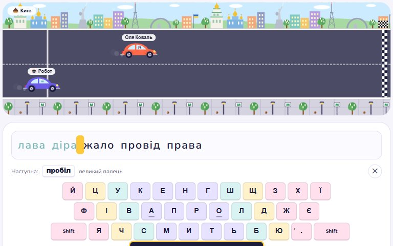
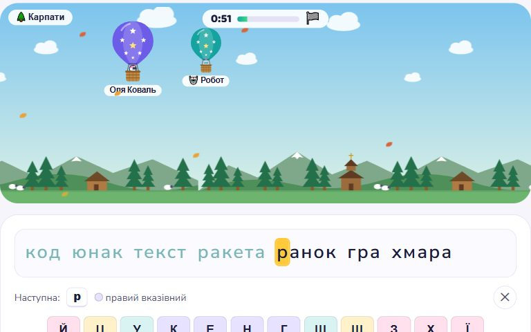
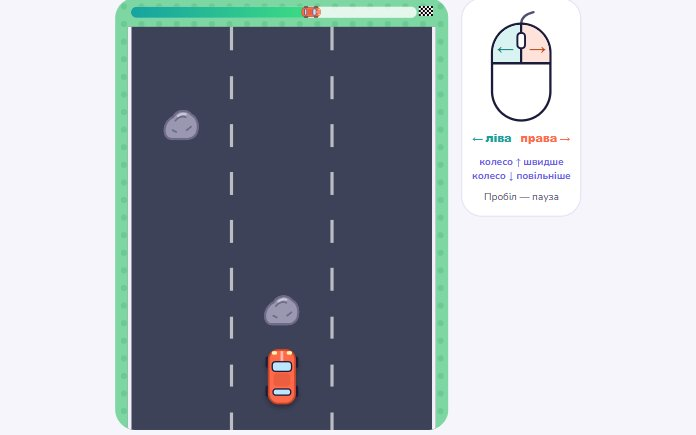
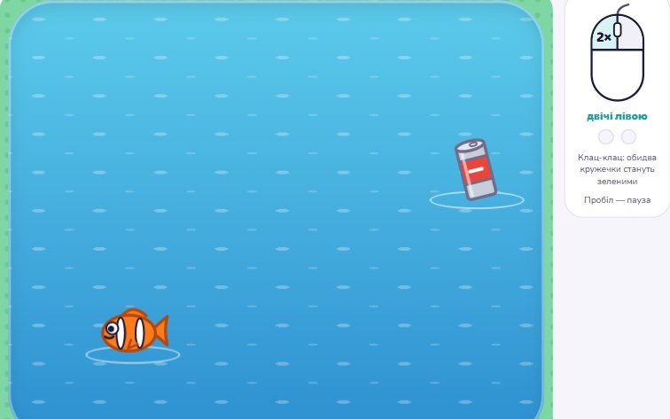
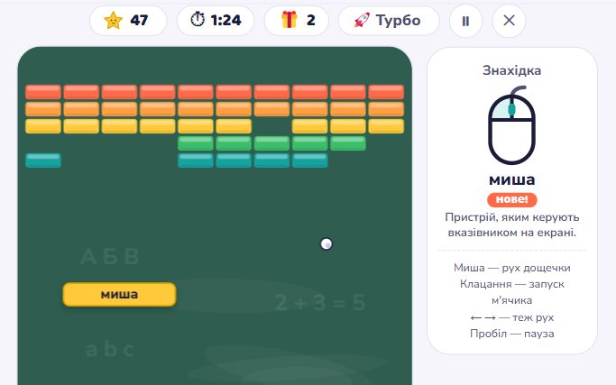
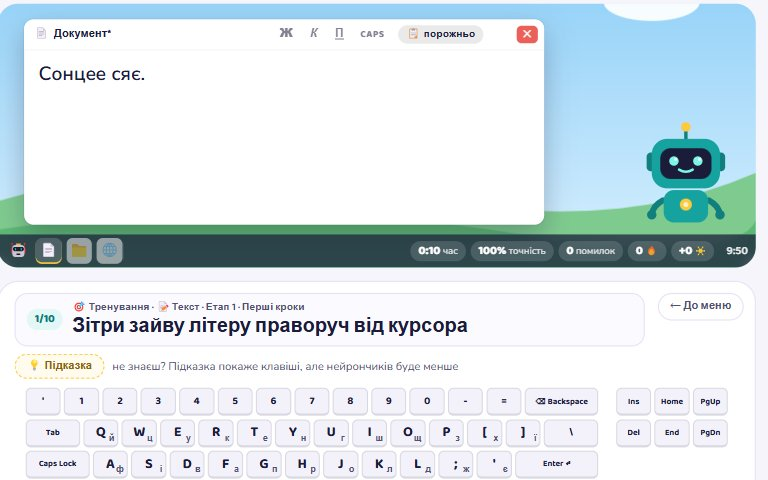

Клавіатура

Клавіатурні перегони Junior
Друкуй текст і обжени робота. Траси від основного ряду клавіш до розділових знаків і цифр.
Грати
Повітряні перегони
Друкуй хвилину, щоб куля летіла над регіонами України, і пролети далі за робота. Зупинишся — куля сяде на землю.
ГратиМиша

Мишачі перегони
Ліва кнопка миші веде автівку вліво, права — вправо. Збирай зірки й кристали, оминай конуси й калюжі мастила.
Грати
Двічі клац!
У ставку виринають жабки, рибки й краби. Лови їх подвійним клацанням, поки не пірнули назад.
ГратиСлова

Цеглинки слів
Відбивай м'ячик і збивай цеглинки, щоб звільнити сховане слово. Спіймай його — і предмет потрапить у колекцію. Терміни інформатики й англійські слова.
Грати
Гарячі клавіші
Ctrl + C, Alt + Tab, Win + D та інші комбінації на намальованому робочому столі: текст, файли, браузер і Windows.
Грати